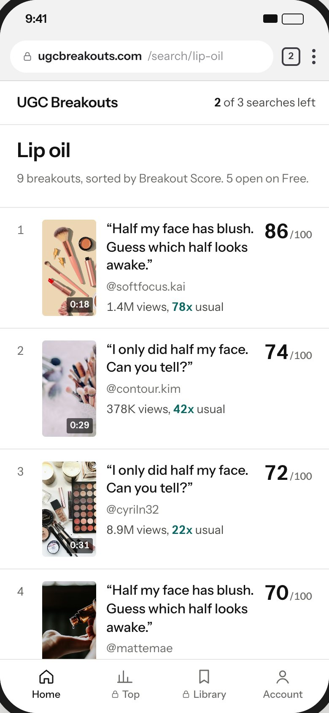
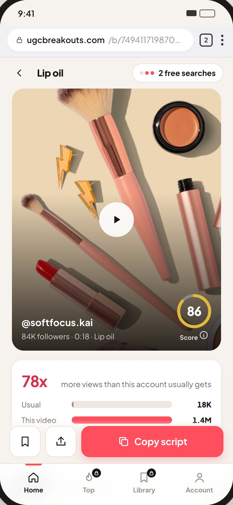
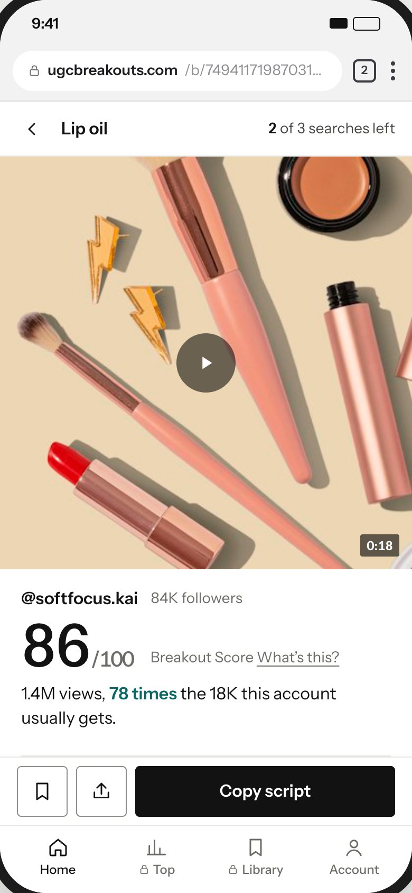
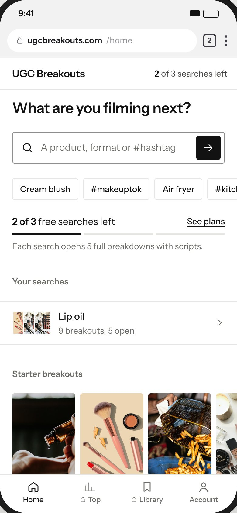
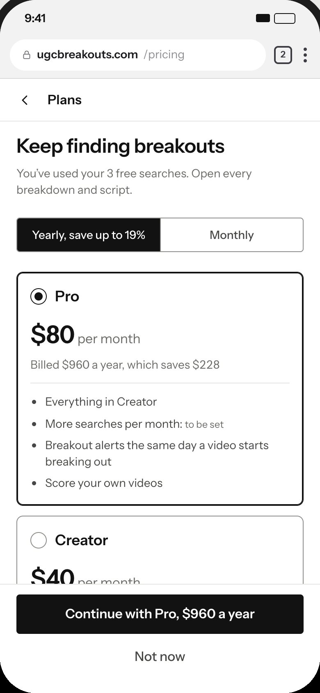

UGC Breakouts 3.0 · 17 Oct 2026
UGC Breakouts 3.0, rebuilt
Your note was that it looked AI-designed and too playful. We studied 19 well-made apps that show video and numbers, checked our screens against 28 published lists of AI-design tells, and rebuilt every screen to 14 rules. Same flow, same copy rules, mobile first.
What made it look AI-made
17uppercase monospace labels above headings
25pills on one screen at most, for chips, badges and tags
18cards with the same soft shadow
27different corner radius values, all rounded
1colored word in the headline with a highlighter swipe
120pieces of confetti after paying
Plus a warm cream background, Plus Jakarta Sans at its heaviest weight, saturated coral and bouncing animations. Rounded shapes, round type and saturated red all read as playful in the research on brand personality.
What well-made apps do
18 of 19keep the brand color off surfaces, using it only for actions and data
16 of 19use no card shadows; a thin line or a gray step separates things
11 of 12media apps keep thumbnails at 8px radius or less, with no badges on the image
10 of 19show lists as rows with dividers, not stacked cards
7 of 19compare a number to the user's own past, like 'more than usual'
0 of 19use monospace labels
From YouTube Studio, TikTok Studio, Spotify for Artists, Edits, Robinhood, Mercury, Apple Stocks, Linear, Letterboxd, Strava, Oura and 8 more.
The 19 reference apps

The rules we built to
- Corners by role: 4px for controls, 8px for cards and video, none for full-width images.
- No pill badges for data. Ranks, scores and multipliers are plain text.
- No uppercase labels above headings. A heading just says the thing.
- One font (Instrument Sans) with straight letter endings and real tabular numbers, three weights at most.
- Black for actions, one teal for breakout data, white pages. No cream, coral or gradients.
- Shadows only on things that float: the sheet, the banner and toasts.
- Lists are rows with thin dividers. No card per item.
- Numbers only where order is real (ranks, script steps).
- Motion only to show state, under 200ms. No bounce, zoom, marquee or confetti.
- Headlines in one color.
- The sales page opens with one full real breakdown.
- Plain copy: no 'Hi Maya', no 'Hang tight', no exclamation marks.
- Only true pricing claims: no crossed-out prices or 'Most popular' until they're real.
- The score is a number out of 100, not a gold ring.
Before and after
Sales page
Results

Video analysis


Home

Plans

Sources
- Anthropic, frontend design skill (names the stock AI looks)
- Anthropic, Improving frontend design through skills
- The Fountain Institute, 7 tells that a UI is AI-generated
- Mowgli, Why AI-built apps look the same
- The Crit, vibe coding design guide
- uxkin, AI slop detector
- UX Planet, why confetti celebrations backfire
- Labrecque and Milne (2012), color and brand personality
- Aaker, Vohs and Mogilner (2010), competence vs warmth
- Carbon Design System, productive motion
- Apple App Store screenshots of the 19 reference apps (16 to 17 Oct 2026)